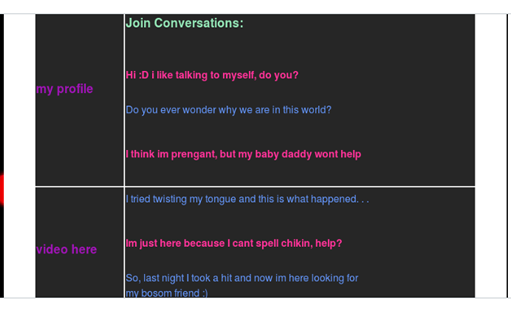
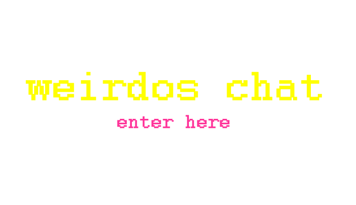

artist's statement.
culturalCritique from Berenice Cortes on Vimeo.
Installation was the second project out of four (2/4). When exhibiting a
piece of art as the artist we need to know how to submerge
our viewer. This idealogy is what we explored in creating this piece.
Ideally, I would like my piece to be viewed in VR. This way
a sense of reality could be achieved just as being able to relate to the piece. Or even gain insight on
a new perspective.
LittleBigWorld from Berenice Cortes on Vimeo.
3/4. One of my favorite topics, a childhood memory. I chose to re-crete a 90's page
as my third project. Once I heard the idea the first memory that formed in my mind was of
me using my pink flip phone. I would use it to go into MySpace or chatrooms to get to know people.
So, I decided to recreate the atmosphere of a chatroom. With a little twist, a 90's chatroom.

4/4. The last project I decided to submerge myselff into was: Net Art. I wanted to
continue working on my 90's inspired site and refine the rough edges. But,
at the same time I wanted to keep the simplicity of the website. I added avatars
and for each conversation (link); it's a new adventure.

ENTER